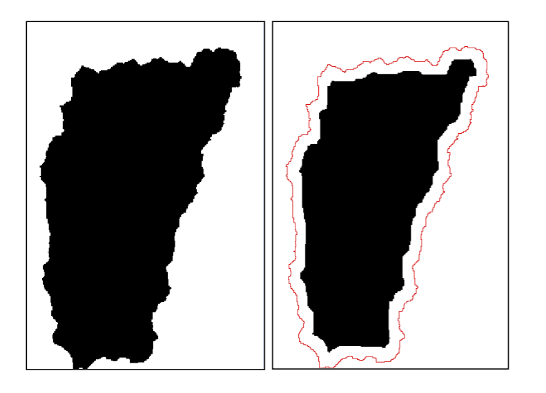

Press 'o' to toggle the slide overview and 'f' for full-screen mode.
Choose the theme in which to view this presentation:
Black -
White -
League -
Sky -
Beige -
Simple
Serif -
Blood -
Night -
Moon -
Solarized
Copyright © John Lindsay, 2015
GEOG*3480
GIS and Spatial Analysis
Basic Raster and Vector
Data Analysis Part 3
John Lindsay
Fall 2015
- In the georelational data model used for vectors, each feature is assigned a unique key or identifer.
- With raster data, points, lines, and polygons are stored as one or more pixels but there is nothing that explicitly identifies a cell as belonging to a certain feature
- What can you do when you need to perform operations on features?
Clumping (Grouping)
- Each
contiguous group of cells with the same value in the input image will be assigned the sameunique identifier in the output image - Called
Region Group in ArcGIS,r.clump in GRASS,Group in Idrisi, andClump (Group) in Whitebox GAT. - Only performed on Boolean or categorical raster images
- Why not on continuous data images?
Clumping (Grouping)
Identifiers are usually assigned in the order they are
encountered during the scan from the upper left-hand corner
Always display clumped images using a random (qualitative)
palette
Clumping as a means of noise removal
Removing background features
Including/excluding diagonal connectivity
Including/excluding diagonal connectivity
Spatial Filtering
- A very widely used analysis technique in raster geospatial analysis; perhaps
the most common raster
neighbourhood operation - Based on
convolution techniques of image processing - Involves visiting each grid cell in an image and examining the neighbouring
cells within a
kernel , also called awindow orfilter - Works on Boolean, categorical, and continuous images
Spatial Filtering
- Filters are used for all kinds of applications
- Some filters are used to smooth surfaces
- Some are used to emphasize the high-frequency noise
- Others are used to find edges in an image

Varrying kernel size
Varrying kernel size
- The most common kernel size is 3 cell × 3 cell
- Any other kernel size is possible, though it should be an odd number so that there is a centre cell to the kernel
- The number of calculations that are needed to perform a filter increase exponentially with increased kernel size
- Repeating a filter several times is equivalent to using a larger filter window
Varrying kernel shapes
Varrying kernel shapes
- Other kernel shapes are possible
- e.g. rectangles, ovals, etc.
- The shape must be approximated by a grid
- These are usually used to give a directional preference to the
filter known as
anisotropy - Isotropy = homogeneity in all directions
- Anisotropy is the opposite, i.e. pronounced directionality
Minimum and maximum filters on Boolean images
Maximum filter on a Boolean is referred to as Dilation
Minimum and maximum filters on Boolean images

Minimum filter on a Boolean is referred to as Erosion
Spatial filtering in ArcGIS
Spatial filtering in Whitebox GAT
Spatial filtering in IDRISI